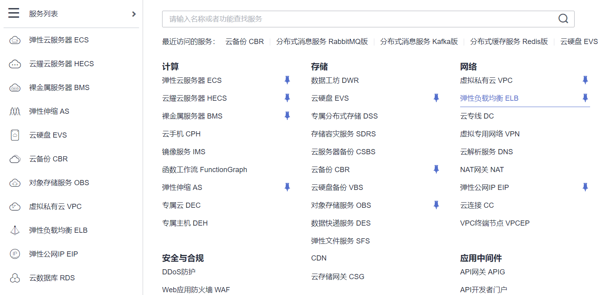

公有云：(1)公有云基础组件实操案例
案例描述
本案例是讲述对华为云公有云平台上部分基本组件服务的使用和运维。
案例一：系统管理与维护
基础准备
准备一个华为云公有云平台账号，并充值部分金额。并在华为云公有云中购买一个云服务器。
案例实施
云备份CBR
云备份控制台
选择华为云平台首页左上角服务列表，选择并点击“存储>云备份CBR”进入云备份控制台，如图1所示。
图1 云备份服务
购买云服务器备份存储库
进入云备份控制台后，在当前页面云服务器备份中选择“购买存储库”，如图2所示。
图2 购买存储库
在配置页面选择计费模式为“按需计费”，保护类型为“备份”，数据库备份暂不启用，选择服务器为“暂不配置”，存储库容量可根据实际需求进行配置，其他选项均为默认，配置完成后点击右下角“立即购买”按钮，如图3所示。
图3 存储库参数配置
在云备份控制台可以查看到购买的备份库列表信息，如图4所示。
图4 存储库列表
绑定服务器
点击备份库的绑定服务器按钮，进入绑定服务器页面。如图5所示。
图5 云备份控制台
选择node2节点，将其绑定至此备份库中。点击确定按钮。如图6所示。
图6 绑定服务器
成功绑定服务器列表，如图7所示。
图7 成功绑定
创建备份策略
点击左侧菜单栏“策略按钮”，进入策略页面，创建一个定时备份策略。点击“创建策略”按钮。如图8所示。
图8 创建策略
创建策略配置类型为“备份策略”，名称为“policy_back”，选择每周天的凌晨1点进行备份，保留规则设置为一个月时间，配置完成后，点击确定按钮。如图9、10所示。
图9 设置备份周期1
图10 设置备份周期2
绑定备份策略
点击备份库列表后的更多按钮，选择绑定备份策略选项。如图11所示。
图11 绑定备份策略1
选择所创建的policy_back备份策略，点击确定按钮。如图12所示。
图12 绑定备份策略2
弹性负载均衡ELB
购买弹性负载均衡ELB
选择华为云左上角服务列表，选择并点击“网络>弹性负载均衡ELB”，进入负载均衡控制台，如图13所示。

图13 ELB
进入页面后，点击右上角“购买弹性负载均衡”，配置参数实例规格类型为“独享型”，计费模式为“按需计费”，可用区域可以为三个区域全选。如图14所示。
图14 配置ELB参数1
网络类型勾选“IPv4公网”，所属VPC为“internet1”，子网为“subnet1”，IPv4地址为“自动分配”，如图15所示。
图15配置ELB参数2
弹性公网IP选择“新创建”，弹性公网IP类型为“全动态BGP”，公网带宽选择“按带宽计费”，带宽为“5Mbit/s”，如图16所示。
图16 配置ELB参数3
规格勾选“网络型（TCP/UDP）”，规格采用“小型 I”，其他选项均为默认即可，配置完成后点击右下角“立即购买”按钮，如图17所示。
图17 配置ELB参数4
配置监听器
在负载均衡器列表中，找到刚才购买的实例信息，在监听器一栏点击“点我开始配置”，如图18所示。
图18 ELB实例列表
在跳转后页面配置第一步，配置监听器参数，配置前端端口为“80”，其他选项均为默认，配置完成后，点击右下角“下一步：配置后端分配策略”，如图19所示。
图19 配置监听器
第二步配置后端分配策略，后端服务器组勾选“新创建”，分配策略类型选择“源IP算法”，其他选项均为默认，配置完成后点击右下角“下一步：添加后端服务器”，如图20所示。
图20 配置后端分配策略
添加后端服务组
继续配置添加后端服务器，在云服务器一栏点击“添加云服务器”，如图21所示。
图21 添加云服务器
在添加后的云服务器列表，配置两台服务器的后端端口为“80”，其他选项均为默认，配置完成后点击右下角“下一步：确认配置”，如图22所示。
图22 配置服务器端口
添加完成后等待一段时间，健康检查结果可变为正常。如图23所示。
图23 健康检查正常
弹性伸缩AS
弹性伸缩
选择华为云平台首页左上角服务列表，选择并点击“计算->弹性伸缩AC”进入弹性伸缩服务控制台。如图24所示。
图24 弹性伸缩AS
创建弹性云服务器镜像
在创建弹性伸缩之前，需要将配置好的云服务器制作成镜像，以便在后面使用伸缩组弹性伸缩时提供基础服务镜像。打开云服务控制台，找到所部署的服务器，点击更多按钮，选择镜像/磁盘->创建镜像。如图25所示。
图25 创建镜像
选择整机镜像，配置创建镜像名称为“example-server”，如图26所示。
图26 配置镜像信息
选择云服务器备份存储库，点击立即创建，如图27所示。
图27 购买备份存储库
购买完成后，返回镜像配置页面，添加备份存储库，如图28所示。
图28 添加备份存储库
等待创建镜像时间5-10分钟，待镜像创建成功。可在页面服务列表->镜像服务->私有镜像控制台可查看当前创建的私有镜像。如图29所示。
图29 镜像列表
创建伸缩配置
在购买弹性伸缩组时需要先创建伸缩配置，伸缩配置中配置了伸缩组在弹性伸缩时所有配置。点击页面右上角创建伸缩配置按钮，创建伸缩配置。如图30所示。
图30 创建伸缩配置
创建伸缩配置，选择计费模式为“按需计费”，配置模板为“使用新模板”，如图31所示。
图31 配置伸缩配置1
配置CPU架构为“x86计算、通用计算型、s6.large.2 2vCPUs | 4GB”，如图32所示。
图32 配置伸缩配置2
选择所创建的私有镜像。因弹性伸缩创建出来的云服务器可自动绑定至负载均衡器上，所以这里可不必配置弹性公网IP地址。配置登录密码为Abc@1234，点击立即创建按钮。如图33、34所示。
图33 配置伸缩配置3
图34 配置伸缩配置4
创建完成后可在伸缩配置列表查看，显示当前状态未绑定伸缩组。如图35所示。
图35 伸缩配置列表
创建伸缩组
点击页面右上角“创建弹性伸缩组”按钮，申请伸缩组。选择上海区域所有可用区，可将伸缩组申请的云服务器分别在不同区域中。配置伸缩组名称和最大实例、期望实例数、最小实例数。选择所创建的伸缩配置，选择所创建的虚拟私有云网络internet1、子网subnet1，如图36、37、38所示。
图36 配置弹性伸缩组1
图37 配置弹性伸缩组2
图38 配置弹性伸缩组3
创建完成后会自动创建云服务器，等待创建完成后，可以在弹性伸缩组列表中查看当前实例数为2，如图39所示。
图39伸缩组
添加实例
点击伸缩组名称进入伸缩组配置，点击页面伸缩实例，添加所手动部署的实例至伸缩组中。点击移入伸缩组按钮。如图40所示。
图40 伸缩实例
选择两个node实例节点，点击确认按钮，如图41所示。
图41 移入伸缩组
等待初始化完成后，将手动添加的实例开启实例保护，这样手动创建的实例不会被删除。如图42所示。
图42 实例保护
添加伸缩策略
点击页面上伸缩策略，添加伸缩策略。配置告警策略，监控周期为5分钟，连续出现3次，在CPU使用率大于80%的情况下，增加一个实例。点击确定按钮创建，如图43所示。
图43 添加CPU大于80策略
点击页面上伸缩策略，添加伸缩策略。配置告警策略，监控周期为5分钟，连续出现3次，在CPU使用率小于40%的情况下，减少一个实例。点击确定按钮创建，如图44所示。
图44 CPU使用率小于40策略
点击页面上伸缩策略，添加伸缩策略。配置告警策略，监控周期为5分钟，连续出现3次，在内存使用率平均值小于30%的情况下，减少一个实例。点击确定按钮创建，如图45所示。
图45 内存使用率平均值小于30策略
案例二：OBS静态网站托管
基础准备
准备一个华为云公有云平台账号，并充值部分金额。并在华为云公有云中购买一个云服务器。
案例实施
购买存储桶
对象存储服务OBS
在华为云左上角服务列表，找到“存储>对象存储服务OBS”，进入OBS控制台页面，如图46所示。
图46 对象存储服务OBS
创建存储桶
点击页面右上角“创建桶”按钮，配置桶名称为“obs-20220216”，数据冗余存储策略配置为“多AZ存储”，默认存储类别为“标准存储”，桶策略为“共共读”，其他选项均为默认，配置完成后点击右下角“立即创建”，如图47所示。
图47配置桶参数
创建完成后可在桶列表中查看到创建后的桶实例，如图48所示。
图48 桶列表
上传文件至存储桶
对象
点击创建后的桶名称，在左侧的功能栏内选择“对象”按钮，如图49所示。
图49对象
上传对象
在当前页面中点击“上传对象”按钮，进入后配置存储类别为“标准”，并将提供的文件上传至桶内，如图50所示。
图50 上传对象
查看对象文件
上传完成后，可以查看到对象内的文件列表，如图51所示。
图51对象文件列表
静态网站托管
配置静态网站托管
点击创建后的桶名称，进入桶的详细功能页面，如图52所示。
图52 桶信息
配置静态网站托管参数
在桶详细信息页面，点击“静态网站托管”按钮，进入到网站托管配置页面，配置托管模式为“配置到当前桶”，默认首页为“index.html”，配置完成后点击“确定”，如图53所示。
图53 配置参数
查看访问地址
静态网站参数配置完成后，我们可以看到会生成一个访问地址。通过这个访问地址我们就可以看到网站的页面。如图54所示。
图54 访问地址
注意：基于安全合规要求，华为云对象存储服务OBS****禁止通过OBS**的默认域名（桶访问域名或静态网站访问域名）使用静态网站托管功能，即使用上述域名从浏览器访问网页类型文件时，不会显示对象内容，而是以附件形式下载。
我们可以通过一台主机，配置DNS后，使用curl命令去访问网页内容，命令如下：
1 | curl https://obs-20220216.obs-website.cn-east-3.myhuaweicloud.com |